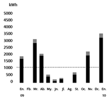
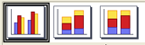
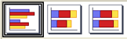
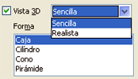

Hojas de cálculo
5.4.1. Gráficos de columnas y de barras
Importante
Los gráficos de barras y de columnas se utilizan para representar la relación entre varias series de datos, en el primer caso mostrando los valores en el eje X y en el segundo en el eje Y.
|
Este tipo de gráficos es uno de los más utilizados ya que permite la visualización de todas las series a la vez. Se crean gráficos muy útiles para realizar análisis comparativos.
Su uso abarca todos los campos, incluso puedes encontrar ejemplos en documentos domésticos o de uso cotidiano, como por ejemplo, en el recibo de luz, el gas o el teléfono.
Este es un ejemplo sencillo con una serie.
|
 Gráfico del consumo eléctrico |
|
Tanto en el tipo de columnas como en el tipo de barras, puedes elegir varias opciones:
| Normal - En pilas - Apilado | Otras posibilidades |
|


|

|
| Capturas de elaboración propia | |
Ejemplo o ejercicio resuelto
Como ya has utilizado un gráfico de columnas en el tema, te proponemos que hagas ahora un gráfico de barras. Y ya que estábamos hablando de la factura de la luz, intenta hacer uno similar del consumo trimestral de teléfono.
Obra publicada con Licencia Creative Commons Reconocimiento No comercial Compartir igual 4.0